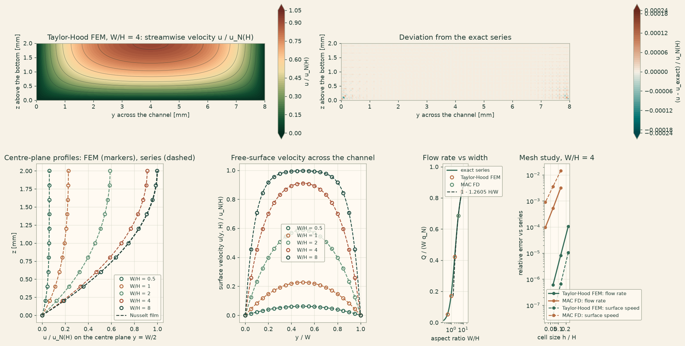
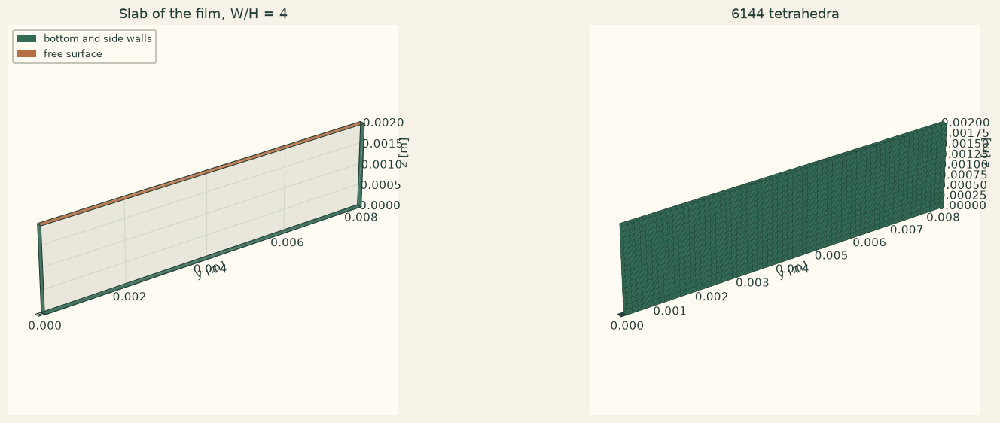

Docs › Examples › Gravity-driven film flow in a channel with side walls
Incompressible flow · 3D
Gravity-driven film flow in a channel with side walls
A viscous liquid film running down an inclined open channel: how the side walls slow it down, from narrow slots to wide films.

What it computes
OneSimulation solves the 3D incompressible Navier-Stokes equations on a streamwise-periodic slab with no-slip walls and a stress-free surface, with Taylor-Hood finite elements and, as a second method, staggered MAC finite differences, for five aspect ratios. The geometry is read from a STEP file with named faces; the script that builds it comes with the notebook.
What it checks
Flow rate and surface speed match the exact Fourier-series solution to 1e-7 to 1e-5, the wide channel recovers the Nusselt film, and both methods converge at their theoretical orders.
Geometry
The notebook starts at the import of the CAD files film_flow_side_walls_3d.step, film_flow_side_walls_3d_16mm.step, film_flow_side_walls_3d_1mm.step, film_flow_side_walls_3d_2mm.step, film_flow_side_walls_3d_4mm.step: STEP (AP242), readable by any CAD program, with the names of the faces that the boundary conditions use. Put them next to the notebook.

The geometry script
The script film_flow_side_walls_3d_geometry.py builds the geometry with the CAD objects of OneSimulation and writes the files. Change a dimension there, run it, and run the notebook again.
"""Geometry of the OneSimulation example "Film flow down an inclined channel with side walls".
Builds a short slab of the liquid film, 2 mm deep and 0.125 mm long, for five channel widths with
the CAD objects of OneSimulation. The channel of 8 mm width goes to film_flow_side_walls_3d.step,
the others to film_flow_side_walls_3d_1mm.step, ..._2mm.step, ..._4mm.step and ..._16mm.step. The
bottom is the face z_min, the free surface z_max and the side walls y_min and y_max; the faces
keep their names in the files.
"""
from onesim.cad.d3 import Box
depth = 0.002
for width_mm in (1, 2, 4, 8, 16):
film = Box(length=depth / 16, width=width_mm / 1000, height=depth)
film.save(
"film_flow_side_walls_3d.step"
if width_mm == 8
else f"film_flow_side_walls_3d_{width_mm}mm.step"
)The notebook
The complete notebook, cell by cell. Run it to produce the figures and the comparison printout.
A liquid film of depth \(H\) flows down an open channel of width \(W\) that is inclined at the angle \(\beta\). The liquid sticks to the bottom and to both side walls; its flat free surface is free of shear stress. Coordinates: \(x\) down the channel, \(y\in[0,W]\) across, \(z\in[0,H]\) from the bottom to the surface.
The film comes from CAD files, one for each channel width: film_flow_side_walls_3d.step (\(W=8\) mm, \(W/H=4\)) and film_flow_side_walls_3d_1mm.step, ..._2mm.step, ..._4mm.step and ..._16mm.step. Each holds a short slab of the film with the bottom z_min, the free surface z_max and the side walls y_min and y_max. The script film_flow_side_walls_3d_geometry.py builds them with the CAD objects of OneSimulation.
Reference. Far from the inlet the flow obeys \(\mu\nabla^2u=-\rho g\sin\beta\) on the cross-section. With \(\lambda_n=(2n+1)\pi/(2H)\) the solution is the series (White, Viscous Fluid Flow)
\(q_N=\rho g\sin\beta\,H^3/(3\mu)\) is the flow rate per width of the Nusselt film without side walls.
import numpy as np
from onesim.cad.d2 import Plane
from onesim.cad.exchange import load
from onesim.materials import NewtonianFluid
from onesim.meshing import (
PeriodicPair,
StructuredHexahedralMesher,
StructuredTetrahedralMesher,
)
from onesim.numerics import Numerics
from onesim.numerics.fdm import CentralDifference, CentralLaplacian, FiniteDifference
from onesim.numerics.fem import FiniteElement, TaylorHood
from onesim.numerics.linear import SparseDirect
from onesim.numerics.nonlinear import Newton
from onesim.physics.hydrodynamics import (
FlowTraction,
IncompressibleNavierStokes,
NoSlipWall,
)
from onesim.results.integration import mean_value
from onesim.simulation import PeriodicBoundary, Problem, Simulation
from onesim.simulation.initial_conditions import InitialValue
from onesim.visualization import plots, theme
theme.set()Geometry and mesh
The five films, keyed by their aspect ratio \(W/H\), and the finite-element mesh of the film with \(W/H=4\): one cell along the channel, 16 over the depth.
film = load("film_flow_side_walls_3d.step")
length, width, depth = film.size
films = {
0.5: load("film_flow_side_walls_3d_1mm.step"),
1.0: load("film_flow_side_walls_3d_2mm.step"),
2.0: load("film_flow_side_walls_3d_4mm.step"),
4.0: film,
8.0: load("film_flow_side_walls_3d_16mm.step"),
}
view = plots.Camera(elevation=28, azimuth=-35)
fig = plots.figure(1, 2, size=(14, 5))
plots.geometry(
film,
selection={
"bottom and side walls": film.boundaries.z_min
| film.boundaries.y_min
| film.boundaries.y_max,
"free surface": film.boundaries.z_max,
},
labels=False,
camera=view,
title="Slab of the film, W/H = 4",
ax=fig[0],
)
mesh = StructuredTetrahedralMesher(cells=(1, 64, 16)).generate(film)
plots.mesh(
mesh,
groups=("all",),
legend=False,
camera=view,
title=f"{mesh.cell_count} tetrahedra",
ax=fig[1],
)
plots.show()Model
Both methods solve the full Navier-Stokes equations on the slab, whose upstream and downstream faces are joined by a periodic condition. Gravity acts as a body force.
tilt = np.deg2rad(10.0)
oil = NewtonianFluid(density=1200.0, dynamic_viscosity=0.10)
drive = oil.density * 9.81 * np.sin(tilt)
nusselt_rate = drive * depth**3 / (3 * oil.dynamic_viscosity)
nusselt_speed = drive * depth**2 / (2 * oil.dynamic_viscosity)
methods = {
"Taylor-Hood finite elements": (
FiniteElement(element=TaylorHood()),
StructuredTetrahedralMesher,
1,
),
"staggered finite differences": (
FiniteDifference(gradient=CentralDifference(), diffusion=CentralLaplacian()),
StructuredHexahedralMesher,
5,
),
}
def solve(method, channel, cells):
"""Velocity field in a channel with `cells` cells over the depth of the film."""
spatial, mesher, along = methods[method]
faces = channel.boundaries
model = IncompressibleNavierStokes(
domain=channel.volume,
material=oil,
body_force=lambda x, y, z: np.column_stack(
(
np.full(len(x), drive),
np.zeros(len(x)),
np.full(len(x), -oil.density * 9.81 * np.cos(tilt)),
)
),
)
problem = Problem(
name="Film flow in an inclined channel",
geometry=channel,
physics=(model,),
boundary_conditions=(
NoSlipWall(boundary=faces.z_min | faces.y_min | faces.y_max, physics=model),
FlowTraction(boundary=faces.z_max, physics=model, value=(0.0, 0.0, 0.0)),
PeriodicBoundary(
pair=PeriodicPair(first=faces.x_min, second=faces.x_max), physics=model
),
),
initial_conditions=(InitialValue(model.velocity, (0.0, 0.0, 0.0)),),
)
numerics = Numerics(
spatial=spatial,
initial_guess={model.velocity: (0.0, 0.0, 0.0)},
nonlinear_solver=Newton(
linear_solver=SparseDirect(),
absolute_tolerance=1e-12,
relative_tolerance=1e-10,
),
)
mesh = mesher(
cells=(along, round(channel.size[1] / depth * cells), cells)
).generate(channel)
return (
Simulation(problem=problem, mesh=mesh, numerics=numerics)
.solve_stationary()
.field(model.velocity)
)
flows = {
aspect: solve("Taylor-Hood finite elements", channel, 16)
for aspect, channel in films.items()
}
studies = {
"Taylor-Hood finite elements": (4, 8, 16),
"staggered finite differences": (8, 16, 32),
}
surface_speeds = {
method: [
solve(method, film, cells).evaluate([[length / 2, width / 2, depth]])[0, 0]
for cells in levels
]
for method, levels in studies.items()
}Results
The flow does not change along the channel, so the flow rate is the mean velocity times the cross-section. Relative to the Nusselt film, narrow channels carry far less. The mesh study compares the speed at the middle of the free surface for both methods.
k = (2 * np.arange(400) + 1) * np.pi / 2
exact_rate = lambda aspect: 1 - 12 / aspect * np.sum(np.tanh(k * aspect / 2) / k**5)
exact_surface_speed = (
2
* nusselt_speed
* (
0.5
- np.sum(
2 / k[:50] ** 3 * np.sin(k[:50]) / np.cosh(k[:50] * width / (2 * depth))
)
)
)
rates = {
aspect: mean_value(flow, component=0) * depth / nusselt_rate
for aspect, flow in flows.items()
}
errors = {
method: np.abs(np.array(speeds) / exact_surface_speed - 1)
for method, speeds in surface_speeds.items()
}
print(" W/H flow rate / (W q_N) exact series deviation")
for aspect, rate in rates.items():
print(
f"{aspect:4.1f} {rate:18.6f} {exact_rate(aspect):14.6f} {rate / exact_rate(aspect) - 1:+11.1e}"
)
for method, levels in studies.items():
print(
f"{method}, W/H = 4, {levels} cells over the depth: surface-speed error "
+ ", ".join(f"{e:.1e}" for e in errors[method])
)Figure
The velocity over the cross-section for \(W/H=4\), the flow rate against the channel width, and the mesh study of both methods.
wide = np.geomspace(0.25, 20, 200)
fig = plots.figure(layout=[["field", "field"], ["rate", "study"]], size=(13, 9))
plots.section(
flows[4.0],
plane=Plane(origin=(length / 2, 0, 0), normal=(1, 0, 0)),
component=lambda u, position: u[:, 0] / nusselt_speed,
limits=(0, 1),
contours=9,
subdivisions=2,
label="u / surface speed of the Nusselt film",
xlabel="y across the channel [m]",
ylabel="z above the bottom [m]",
title="Velocity down the channel, W/H = 4",
ax=fig["field"],
)
plots.line(
wide,
{"exact series": [exact_rate(aspect) for aspect in wide]},
points={"finite elements": (list(rates), list(rates.values()))},
scale="logx",
ylimits=(0, 1.02),
xlabel="aspect ratio W/H",
ylabel="flow rate / (W q_N)",
title="Side walls reduce the flow rate",
legend="upper left",
ax=fig["rate"],
)
plots.line(
y={
method: ([1 / cells for cells in levels], errors[method])
for method, levels in studies.items()
},
markers=True,
scale="loglog",
xlabel="cell size / depth",
ylabel="relative error of the surface speed",
title="Mesh study, W/H = 4",
ax=fig["study"],
)
plots.show()Going further
Add a width to film_flow_side_walls_3d_geometry.py and write the STEP files again. Tilt the channel further and the film speeds up with \(\sin\beta\); a shear stress on the free surface (wind) changes the profile near the surface.